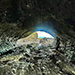
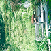
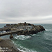
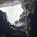
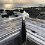
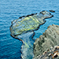
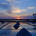

<夏季光雕熱氣球>
丁彥翔│產品技術二處 \ 電源二部
看著夜晚燃起的氣球，那充滿想像力氣球彩繪，片刻間彷彿回到童年快樂時光。
<藏王樹冰>
丁彥翔│產品技術二處 \ 電源二部
白雪靄靄，太陽升起照亮一片銀白色大地。
<花蓮-翡翠谷>
王柏勝│產品十三處 \ 軟體十三部
隱世在花蓮山林間的秘境，石頭壁面沖刷而下的天然門簾。

<花蓮-石門麻糬洞>
王柏勝│產品十三處 \ 軟體十三部
天然的March小汽車海蝕洞，搭配著蔚藍的海浪與天空，還有徐徐的風吹來，是個放鬆的好去處。

<新店-銀河洞>
王柏勝│產品十三處 \ 軟體十三部
與世隔絕的廟宇沿岩洞而建，從洞內穿過，眼前的景色如仙境一般，令人陶醉。
<埔心牧場 - 羊駝>
古珊│共同工程處 \ 安規部
如果紅蘿蔔跟你掉到海裡，我會毫不猶豫地選擇紅蘿蔔。
<青立方>
古珊│共同工程處 \ 安規部
踏進青立方的紅磚城堡，彷彿走入宮崎駿筆下的古老山城。
<綠島小摩艾>
吳信輝│產品十五處 \ 軟體應用十五部
坐落於綠島12米的海底，高清的水質，無論水肺或是自由潛水皆能輕鬆合照。
<永安漁港>
吳信輝│產品十五處 \ 軟體應用十五部
大疫情時代，熙熙攘攘的景象已不再。
<落日餘暉>
李素霞│視訊研發處 \ 專家系統部 \ 元件評估課
傍晚的日月潭，落日餘暉增添幾分寧靜之美。
<馬祖南竿-藍眼淚>
施彥閤│無線通訊處 \ 無線通訊三部
因疫情關係，只得到馬祖蜜月，不過一點都不後悔，等待了好幾天的藍眼淚終於親眼看見~

<馬祖西莒-菜浦澳>
施彥閤│無線通訊處 \ 無線通訊三部
花崗岩脈一條一條細長的橫紋節理呈放射狀深入海中，受海水侵蝕後形成大小不一的懸崖、險礁等，堆起千層浪，因此海岸地形十分多樣化，獨特的海蝕景觀是菜浦澳地質公園最大的地理特色。
<馬祖-東引>
施彥閤│無線通訊處 \ 無線通訊三部
台澎金馬最北端的領土，處處可見軍營、碉堡、哨戰，還有著迷彩服的阿兵哥，拍攝時迷霧壟罩，為東引增添特殊的戰地風情。
<做生意>
連柏柔│企業產品共同工程處 \ 工程資產管理部
埃及人為了向尼羅河遊輪上的遊客推銷浴巾，會先向船上的遊客吆喝，當找到注視自己的目標後，埃及人便直接將浴巾拋到郵輪上給客人看，接著雙方用吶喊的方式展開一連串的討價還價過程，願意成交的話就把埃磅裝入塑膠袋中扔到船上給他們，否則就把浴巾拋回船上即可。有趣的是成交後，埃及人會繼續拋其他款式的浴巾上來給同一個客人看，這種做生意的積極態度，實在值得讚賞！
攝影地點：埃及
<步步驚心>
連柏柔│企業產品共同工程處 \ 工程資產管理部
曾獲得多項建築獎首獎的十三行博物館，裡頭其實藏有一個極具設計感的步步驚心長梯，一大片灰色牆面加上陽光投射產生的光影效果，散發出一股神祕的氛圍，愛好攝影的朋友不要錯過了。
攝影地點：十三行博物館
<舊山線鐵道-大甲溪花樑鋼橋>
郭惠瑄│財務成本控制 \ 銷售 \ 流程管理處
每個走過的路都不會白費，不論結果與否，好與不好都是一種祝福，祝 好。在這綿延的舊鐵道很好拍耶！只不過鐵道老舊，還是不要走到前面去，在隧道口旁拍就好了唷！
<華梵螢色地毯>
陳俊宏│設計品保一處 \ DQA1二部
貼地飛行的螢火蟲形成了一張螢色的地毯
<高雄海流中心>
陳俊宏│設計品保一處 \ DQA1二部
高雄海流中心的暮色
<大屯山雲海>
陳俊宏│設計品保一處 \ DQA1二部
綿綿的雲海穿梭在大屯山峰谷間

<茶壺山登頂>
楊庭懿│共同工程處 \ 電磁相容四部
登頂只剩一步之遙，卻是整個輕裝登山最難的一步。
手上抓著繩索想像著望出去的美好，走吧可以的。
<高美一景>
楊庭懿│共同工程處 \ 電磁相容四部
踏著腳踏車一路騎向高美濕地，期間看到扶搖直上的鋼纜分割著湛藍的天空。
<空拍落日>
廖韋民│產品九處 \ 軟體應用九部
礙於空拍法規，日落後未經申請禁止飛行，趁還能合法飛行為空拍機放電時，意外捕捉到的畫面，橘黃的夕陽光輝灑落在海面及地面上，為黑夜來臨前的東半球帶來最後一絲溫暖。
<海上花火節>
廖韋民│產品九處 \ 軟體應用九部
四月底向公司請了特休，三五好友飛了一趟澎湖，參加人生中第一次澎湖花火節，把平時的煩惱寄託於煙火，隨它在空中閃耀綻放後消失殆盡，也許這會成為每年的固定行程。
<後寮天堂路>
廖韋民│產品九處 \ 軟體應用九部
這裡原是後寮東港碼頭，這條道路也是因為要給漁船卸貨而興建的，後來隨著新港口的闢建，這個後寮東港碼頭就沒有再被使用過，一直荒廢在這裡，直到近幾年被發現成為熱門的觀光景點，清澈的海水，不管從哪個角度看都使人心曠神怡。

<過程>
蔡孟勳│工業設計處 \ 產品設計二部
即使當下走的崎嶇，抬起頭來看向模糊而卻又美麗的未來，
就會覺得這些過程雖然苦澀但回味起來最有記憶。
<澎湖花火節最終場>
蔡宗翰│機構研發處 \ 機構技術部
疫情爆發前的最後一場花火節，在短暫的片刻綻放出最耀眼的花火。

<七美小台灣>
蔡宗翰│機構研發處 \ 機構技術部
位於澎湖七美島的一個熱門景點，經年累月而成的海蝕平台。
<後山夜景>
蔡宗翰│機構研發處 \ 機構技術部
每個人都會有自己的私房夜景景點，從不同的視野望去，夜晚的新北，都是那麼的繁華絢麗。
<鱷魚島>
鄭涵憶│企業產品研發二處 \ 專案工程二部
原來！在翡翠水庫中還隱藏了一隻鱷魚！越往深處越往上走，總有機會發現另外的驚喜。
<北海道>
謝毓挺│通訊與基礎架構處 \ 系統管理部
北海道富良野之七彩繽紛花田~

<台南七股>
謝毓挺│通訊與基礎架構處 \ 系統管理部
台南七股井仔腳瓦盤鹽田夕照~~
<海鷗排排站>
謝毓挺│通訊與基礎架構處 \ 系統管理部
意外補捉到三隻海鷗排排站的身影！


{kind=link}
{kind=link}
{kind=link}
{kind=link}
{kind=link}
{kind=link}
{kind=link}
{kind=link}
{kind=link}
{kind=link}
{kind=link}
{kind=link}
{kind=link}
{kind=link}
{kind=link}
{kind=link}
{kind=link}
{kind=link}
{kind=link}
{kind=link}
{kind=link}
{kind=link}
{kind=link}
{kind=link}
{kind=link}
{kind=link}
{kind=link}
{kind=link}
{kind=link}
{kind=link}